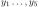
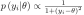
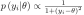

Next: Ayudantıa Up: Modelos uniparamétricos Previous: 2.8b.
normalidad asintótica de la posterior: sea

muestras independientes de una distribución cauchy con parametro
de posición desconocido  y escala conicda
y escala conicda  .
.
Asuma que la distribución a priori para
.
.
Asuma que la distribución a priori para